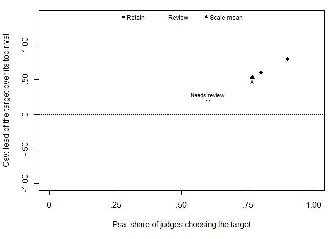
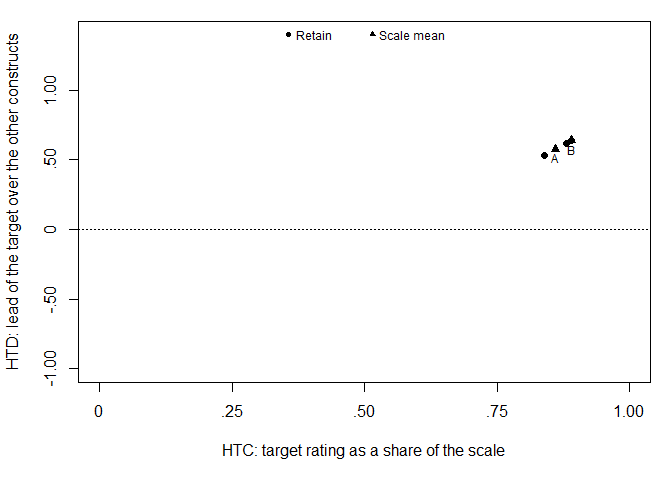
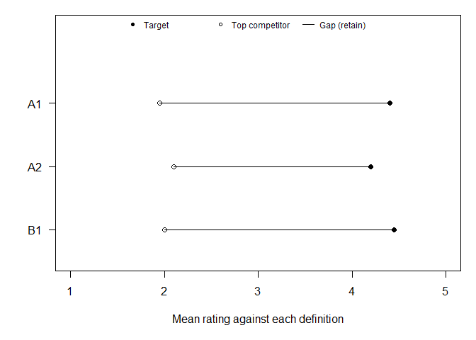
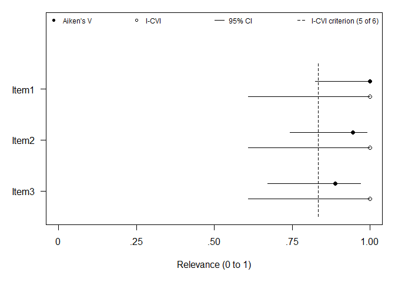
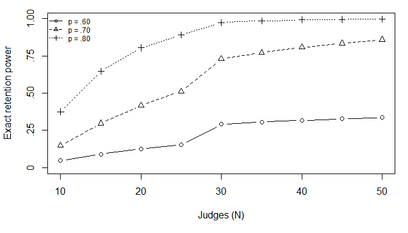

Current stable release: 0.8.0.
Development plans: Roadmap · Future research · Open issues. Documentation: Package website · Changelog.
contentvalidR provides quantitative tools for substantive and content-oriented scale pretesting. The package provides six complementary workflows:
- Item sorting — Anderson & Gerbing (1991) Psa/Csv, exact item-level inference following Howard & Melloy (2016), and scale-level empirical norms from Colquitt et al. (2019).
- Construct ratings — Hinkin & Tracey (1999) fully crossed ratings, HTC/HTD, Greenhouse-Geisser-aware repeated-measures item screening, and Colquitt et al. (2019) scale-level norms.
- Expert panels — Aiken’s V, Lawshe CVR, CVI/modified kappa with score intervals, item-objective congruence, and panel-level agreement.
- Delphi rounds — consensus and stability across successive expert rounds: the share of experts agreeing against a threshold fixed before the study, and between-round weighted kappa following Holey et al. (2007), with the published alternatives selectable.
- Judge heterogeneity — generalizability theory for content-validity ratings following Crocker, Llabre & Miller (1988), judge severity and rater effects, and leave-one-judge-out influence diagnostics.
- Domain coverage — blueprint coverage, and expert-perceived content structure via the multidimensional scaling and clustering procedure of Sireci & Geisinger (1992).
The first four ask whether each item behaves as intended, or, in a Delphi study, whether the panel has settled on it. The last two ask questions no item-level index can reach: whether your conclusions depend on the particular judges you recruited, and whether your item set actually covers the domain you set out to measure. An item can only be rated if someone wrote it, so a perfect relevance index says nothing about the facet you forgot.
The design goal is interpretable output rather than coefficient dumps. Recommended workflow functions summarize what the evidence supports, flag items that need attention, and distinguish statistical screening from substantive decisions. Printed output defines every index it reports, so results can be read without first consulting the source papers; see vignette("reading-output").
Quantitative content-validity statistics are one part of a broader validity argument. They complement, rather than replace, construct definition, domain coverage, qualitative expert feedback, cognitive interviewing, and other evidence about relevance, comprehensiveness, and comprehensibility.
One workflow API
All six recommended workflows share a stable object contract. A fitted sort_validity(), rating_validity(), expert_validity(), delphi_validity(), judge_validity(), or domain_validity() object always contains:
-
results— evidence at the workflow’s unit of analysis; -
scale_summary— target-scale or panel-level evidence; -
settings— analysis choices; -
design— sample-size, missingness, and design metadata; and -
details— method-specific supporting results.
The unit of analysis in results differs by workflow, which matters when writing code against them: sort_validity(), rating_validity(), expert_validity(), and delphi_validity() return one row per item, judge_validity() one row per judge, and domain_validity() one row per blueprint cell.
Every results table also includes a common status field with the restrained categories Supported, Review, Insufficient data, or Descriptive only. Method-specific recommendation wording is retained alongside it—for example, item-sort and construct-rating workflows still use Retain when their full statistical screening criterion is met. This keeps the methods faithful to their evidentiary role while making programmatic use consistent across workflows.
summary() uses the same common count fields across every workflow, and print()/plot() retain method-appropriate displays. Compatibility aliases such as rating_fit$contrasts and expert_fit$scale remain available for code written before v0.0.6.
What you can rely on
The six recommended workflows, the object contract they share, and the handoff to empirical validation are stable: breaking changes wait for a major version and never arrive without a deprecation cycle. Component indices and planning helpers are supported to the same standard and may gain arguments. Auxiliary and compatibility helpers may be deprecated with one minor release of warning. A changed default is treated as a breaking change, because it can silently change published numbers.
See ?contentvalidR for the full policy, including how deprecation works and what the handoff schema guarantees a downstream package.
Installation
Install the current stable release from the JUhalt R-universe:
install.packages(
"contentvalidR",
repos = c(
"https://juhalt.r-universe.dev",
"https://cloud.r-project.org"
)
)Install the current development version directly from GitHub:
# install.packages("remotes")
remotes::install_github("JUhalt/contentvalidR")Recommended item-sort workflow
library(contentvalidR)
sort_dat <- data.frame(
item = rep(c("Clear 1", "Clear 2", "Needs review"), each = 20),
rater = rep(1:20, 3),
target_construct = "A",
assigned_construct = c(
rep("A", 18), rep("B", 2),
rep("A", 16), rep("B", 4),
rep("A", 12), rep("B", 8)
)
)
fit <- sort_validity(sort_dat)
fit
#> contentvalidR item-sort analysis
#> --------------------------------
#> Items: 3 | Judges: 20 | Target constructs: 1
#> Test: Howard-Melloy exact target-count test (p0 = .50, alpha = .05)
#> Judges: naive, meaning drawn from the kind of people who will answer the
#> items.
#>
#> 2 of 3 items meet the exact target-assignment criterion.
#> Flagged for review: Needs review
#>
#> Item-level evidence
#> item target decision judges Psa 95% CI Csv competitor p
#> Clear 1 A Retain 18/20 .90 [.70, .97] .80 B < .001
#> Clear 2 A Retain 16/20 .80 [.58, .92] .60 B .006
#> Needs review A Review 12/20 .60 [.39, .78] .20 B .252
#>
#> judges: assignments to the target construct, out of the judges who sorted the
#> item.
#> 95% intervals for proportions: Wilson score (the default). Newcombe (1998)
#> compared seven methods and recommends score intervals over the Wald interval.
#> An interval reflects how few ratings an item received, not whether the right
#> judges were chosen.
#>
#> Scale-level Colquitt benchmarks
#> target items mean Psa Psa level mean Csv Csv level
#> A 3 .77 Moderate .53 Moderate
#> Benchmark set: Overall (not correlation-normed)
#>
#> Colquitt labels are empirical percentile norms derived from scale-level
#> averages, not universal cutoffs or automatic scale-retention rules. They
#> place a scale against published scales; Psa and Csv sit on different scales,
#> so their labels are not comparable with each other.
#>
#> What these columns mean
#> Psa -- Proportion of Substantive Agreement. Share of judges who put the
#> item in the construct it was written for (0 to 1; higher is
#> stronger).
#> 95% CI -- Interval for Psa. Wider when fewer judges sorted the item; the
#> method is named above.
#> Csv -- Coefficient of Substantive Validity. How much more often judges
#> chose the intended construct than its closest rival (-1 to 1; 0 is a
#> tie).
#> competitor -- Strongest competing construct. The construct other than the
#> intended one that judges chose most often.
#> p -- Howard-Melloy exact test. Chance of at least this many target
#> assignments if judges assigned at the rate p0; compared with alpha.
#>
#> What the decisions mean
#> Retain -- met the exact target-assignment criterion.
#> Review -- did not meet it; the competitor column shows where judges put
#> it instead.
#>
#> Full definitions: contentvalid_glossary(). To hide this key:
#> options(contentvalidR.show_key = FALSE).
#>
#> 'Review' is not an automatic deletion decision. Use theory, construct-domain
#> coverage, item wording, and qualitative judge feedback alongside these
#> statistics.
summary(fit)
#> Summary: item-sort content-validity evidence
#> --------------------------------------------
#> Retain: 2 of 3 | Review: 1 of 3
#>
#> Scale-level evidence
#> target items retain review mean Psa Psa level mean Csv Csv level overall
#> A 3 2 1 .77 Moderate .53 Moderate Moderate
#>
#> A: The weaker of Psa and Csv falls in the Moderate band of published scales
#> (Colquitt et al., 2019); review the weaker items before finalizing.
#>
#> Items needing attention
#> item target decision Psa Csv competitor p
#> Needs review A Review .60 .20 B .252
#>
#> Needs review: Target favored, exact criterion not met
#>
#> Interpret scale norms and item flags alongside theory, domain coverage, and
#> qualitative feedback. This analysis does not by itself establish
#> comprehensiveness or the full content-validity argument.The workflow deliberately separates two levels of evidence:
-
Item level: Psa/Csv plus the exact Howard-Melloy target-count rule produce Retain, Review, or Insufficient data flags. Psa is reported with an interval (
psa_low,psa_high), so an item sorted by few judges does not look more settled than it is. The output also names the strongest competing construct so a weak item is diagnostically useful rather than just “non-significant.” - Target-scale level: Psa and Csv are averaged across the target scale’s items and interpreted using Colquitt et al. (2019)’s empirical percentile norms for definitional correspondence and distinctiveness. This matches how those norms were constructed.
Review deliberately does not mean automatic deletion. Likewise, Colquitt categories such as Strong or Moderate are percentile bands relative to published scales, not universal pass/fail cutoffs.
Correlation-conditional Colquitt norms
If substantive data provide the average correlation between a focal scale and its orbiting scales, the workflow can select Colquitt et al.’s correlation-conditional norm set:
normed <- sort_validity(sort_dat, orbiting_r = .42)$scale_summary
normed[c("target", "orbiting_r", "benchmark_set", "overall_strength")]
#> target orbiting_r benchmark_set
#> 1 A 0.42 More moderate focal-orbiting correlation (.35-.50)
#> overall_strength
#> 1 Moderate
colquitt_benchmarks("csv", orbiting_r = .42)
#> Benchmarks for Csv (Colquitt et al., 2019): More moderate focal-orbiting
#> correlation (.35-.50)
#>
#> band percentile minimum
#> Very Strong 80th-99th .83
#> Strong 60th-79th .61
#> Moderate 40th-59th .52
#> Weak 20th-39th .01
#> Lack of 0th-19th none
#>
#> A scale-level mean at or above a band's minimum falls in that band. The bands
#> are percentiles of published scales, not validity cutoffs.The published norms were developed with naive judges representative of the target population. If the sort used expert judges, declare that explicitly; the package will suppress Colquitt labels rather than apply an unsupported benchmark:
experts <- sort_validity(sort_dat, judge_type = "expert")$scale_summary
experts[c("target", "psa_strength", "csv_strength", "benchmark_applicable")]
#> target psa_strength csv_strength benchmark_applicable
#> 1 A <NA> <NA> FALSE
experts$evidence
#> [1] "Colquitt norms not applied because this workflow was marked as using expert judges."Exact planning rather than a judge-count rule of thumb
sort_power(N = c(20, 30, 40), true_p = c(.60, .70, .80))
#> contentvalidR item-sort planning
#> --------------------------------
#> Retention rule: Howard-Melloy exact test (p0 = .50, alpha = .05)
#>
#> judges required minimum Psa power at .60 power at .70 power at .80
#> 20 15/20 .75 .13 .42 .80
#> 30 20/30 .67 .29 .73 .97
#> 40 26/40 .65 .32 .81 .99
#>
#> required: target assignments an item needs to be retained. minimum Psa: the
#> same as a proportion. power at p: the exact probability of reaching the
#> required count if each judge assigns the item to its target with probability
#> p.sort_power() gives the exact probability of reaching the Howard-Melloy retention count under each planned N and assumed true target-assignment probability.
Low-level statistics
Researchers who need the component statistics directly can still use:
compute_psa(sort_dat)
#> Proportion of substantive agreement (Psa; Anderson & Gerbing, 1991)
#>
#> item target judges Psa 95% CI
#> Clear 1 A 18/20 .90 [.70, .97]
#> Clear 2 A 16/20 .80 [.58, .92]
#> Needs review A 12/20 .60 [.39, .78]
#>
#> judges: assignments to the target construct, out of the judges who sorted the
#> item.
#> 95% intervals for proportions: Wilson score (the default). Newcombe (1998)
#> compared seven methods and recommends score intervals over the Wald interval.
#> An interval reflects how few ratings an item received, not whether the right
#> judges were chosen.
compute_csv(sort_dat)
#> Coefficient of substantive validity (Csv; Anderson & Gerbing, 1991)
#>
#> item target judges competitor competitor judges Csv
#> Clear 1 A 18/20 B 2/20 .80
#> Clear 2 A 16/20 B 4/20 .60
#> Needs review A 12/20 B 8/20 .20
#>
#> Csv is the target count minus the count for the most-chosen other construct,
#> divided by the number of judges.
csv_binom_test(n_c = 15, N = 20)
#> Howard-Melloy exact test (one-tailed)
#>
#> 15 of 20 judges assigned the item to its target construct (Psa = .75). If
#> judges chose the target at the rate p0 = .50, a count this high has
#> probability p = .021.
#> At alpha = .05 an item needs at least 15 of 20. Decision: significant.
#> One-sided 95% interval for the target rate: [.54, 1.00].
interpret_colquitt(.70, "csv")
#> Benchmark bands (Colquitt et al., 2019)
#>
#> statistic value band benchmarks
#> Csv .70 Strong Overall (not correlation-normed)
#>
#> Empirical percentile norm from scale-level averages; not a universal cutoff.Missing assignments are excluded itemwise and are reported explicitly in n_missing so the effective denominator is visible.
Recommended construct-rating workflow
In the Hinkin-Tracey design, the same judge rates each item against every construct definition. rating_validity() treats that dependence explicitly rather than analyzing the ratings as independent groups.
set.seed(12)
rating_dat <- expand.grid(
item = c("A1", "A2", "B1"),
rater = 1:20,
construct = c("A", "B", "C")
)
rating_dat$target_construct <- ifelse(rating_dat$item == "B1", "B", "A")
rating_dat$rating <- ifelse(
rating_dat$construct == rating_dat$target_construct,
pmin(5, pmax(1, round(rnorm(nrow(rating_dat), 4.4, .6)))),
pmin(5, pmax(1, round(rnorm(nrow(rating_dat), 2.1, .7))))
)
rfit <- rating_validity(rating_dat, scale_min = 1, scale_max = 5)
rfit
#> contentvalidR construct-rating analysis
#> ---------------------------------------
#> Items: 3 | Judges: 20 | Target constructs: 2 | Constructs rated: 3
#> Design: within-judge ratings on a 1 to 5 scale
#> Test: one-way repeated-measures ANOVA (Greenhouse-Geisser corrected omnibus
#> p) plus planned paired target-versus-orbiting contrasts; planned-contrast
#> adjustment: none.
#> Judges: naive, meaning drawn from the kind of people who will answer the
#> items.
#>
#> 3 of 3 items meet the full item-level screening criterion.
#>
#> Item-level evidence
#> item target decision n HTC HTD omnibus p contrast p competitor
#> A1 A Retain 20 .88 .62 < .001 < .001 C
#> A2 A Retain 20 .84 .53 < .001 < .001 B
#> B1 B Retain 20 .89 .64 < .001 < .001 C
#>
#> n: judges who rated the item against every construct. omnibus p: do the
#> item's ratings differ across constructs (Greenhouse-Geisser corrected).
#> contrast p: the largest p among the planned target-versus-orbiting contrasts,
#> so every contrast is at or below it.
#>
#> Target-scale Colquitt benchmarks
#> target items mean HTC HTC level mean HTD HTD level
#> A 2 .86 Moderate .57 Very Strong
#> B 1 .89 Strong .64 Very Strong
#> Benchmark set: Overall (not correlation-normed)
#>
#> Colquitt labels are empirical percentile norms for scale-level HTC and HTD
#> averages, not universal cutoffs. HTC is an average rating and HTD is a
#> difference between ratings, so they sit on different scales with different
#> typical values. A high HTC can be labeled Weak in the same analysis where a
#> much smaller HTD is labeled Very Strong. Compare each index against its own
#> benchmark, never against the other index's number.
#>
#> What these columns mean
#> HTC -- Hinkin-Tracey Correspondence. Mean rating against the intended
#> definition, as a share of the rating scale (0 to 1).
#> HTD -- Hinkin-Tracey Distinctiveness. How far that mean exceeds the
#> closest rival's, as a share of the scale (usually small).
#>
#> What the decisions mean
#> Retain -- rated highest against its intended construct, with every
#> planned contrast meeting the screening criterion.
#>
#> Full definitions: contentvalid_glossary(). To hide this key:
#> options(contentvalidR.show_key = FALSE).
#>
#> 'Review' is not an automatic deletion decision. Consider construct
#> definitions, item wording, orbiting-construct choice, domain coverage, and
#> qualitative judge feedback.
summary(rfit)
#> Summary: construct-rating content-validity evidence
#> ---------------------------------------------------
#> Retain: 3 of 3 | Review: 0 of 3
#>
#> Scale-level evidence
#> target items retain review mean HTC HTC level mean HTD HTD level overall
#> A 2 2 0 .86 Moderate .57 Very Strong Moderate
#> B 1 1 0 .89 Strong .64 Very Strong Strong
#>
#> A: The weaker of HTC and HTD falls in the Moderate band of published scales
#> (Colquitt et al., 2019); inspect the weaker items and construct overlap
#> before finalizing the scale.
#> B: The weaker of HTC and HTD falls in the Strong band of published scales
#> (Colquitt et al., 2019).
#>
#> All analyzed items met the item-level inferential screening criterion.
#>
#> Interpret these results alongside theory, domain coverage, and qualitative
#> feedback. The analysis does not by itself establish comprehensiveness or the
#> full content-validity argument.The workflow combines two descriptive indices with direct item-level screening:
- HTC (Hinkin-Tracey correspondence): how strongly ratings match the intended definition;
- HTD (Hinkin-Tracey distinctiveness): how much intended-definition ratings exceed orbiting-definition ratings;
- a one-way repeated-measures ANOVA for each item; and
- planned paired contrasts comparing the target definition with each orbiting definition.
As with the item-sort workflow, Retain and Review are screening labels rather than automatic editorial decisions. The output names the strongest orbiting competitor so a weak item tells the researcher where the conceptual overlap appears. Colquitt HTC/HTD labels are applied to target-scale averages, not treated as universal item-level cutoffs.
Low-level components remain available:
htc(rating_dat, scale_min = 1, scale_max = 5)
#> Hinkin-Tracey correspondence (HTC; Colquitt et al., 2019)
#>
#> item target judges target mean HTC
#> A1 A 20 4.40 .88
#> A2 A 20 4.20 .84
#> B1 B 20 4.45 .89
#>
#> HTC expresses the mean target rating as a share of the 5-point scale.
htd(rating_dat, scale_min = 1, scale_max = 5)
#> Hinkin-Tracey distinctiveness (HTD; Colquitt et al., 2019)
#>
#> item target judges target mean competitor competitor mean HTD
#> A1 A 20 4.40 C 1.95 .62
#> A2 A 20 4.20 B 2.10 .53
#> B1 B 20 4.45 C 2.00 .64
#>
#> competitor: the other construct with the highest mean rating. HTD itself
#> averages the gap over every other construct.
anova_content(rating_dat)
#> Content-validity ANOVA (Hinkin & Tracey, 1999)
#>
#> item target judges omnibus test p partial eta^2 competitor
#> A1 A 20 F(1.71, 32.57) = 108.55 < .001 .85 C
#> A2 A 20 F(1.52, 28.90) = 66.93 < .001 .78 B
#> B1 B 20 F(1.91, 36.22) = 94.21 < .001 .83 C
#> contrast p contrasts met
#> < .001 yes
#> < .001 yes
#> < .001 yes
#>
#> Within-judge omnibus tests are Greenhouse-Geisser corrected, so their degrees
#> of freedom are fractional.
#> contrast p: the largest p among the planned target-versus-other contrasts;
#> attr(x, "contrasts") holds every contrast.Recommended expert-panel workflow
Expert panels answer several different questions, so expert_validity() uses an explicit mode rather than pretending that Aiken V, CVR, CVI, and IOC are interchangeable.
Relevance: Aiken V + CVI / modified kappa
expert_ratings <- matrix(
c(4,4,4,4,4,4,
4,4,4,3,4,4,
4,3,4,4,3,4),
nrow = 6,
dimnames = list(NULL, c("Item1", "Item2", "Item3"))
)
efit <- expert_validity(
expert_ratings,
mode = "relevance",
lo = 1, hi = 4,
seed = 1
)
efit
#> contentvalidR expert-panel analysis
#> -----------------------------------
#> Mode: relevance
#> Items: 3 | Experts/item: 6
#> Mean Aiken V: .94 | S-CVI/Ave: 1.00 | S-CVI/UA: 1.00
#> Panel agreement, Krippendorff's alpha (ordinal): .02, 95% CI [-.13, .15].
#> Identical rating pairs: 71.1%.
#>
#> 3 of 3 items meet the I-CVI criterion, all with strong support (modified
#> kappa above .74).
#>
#> item decision N V 95% CI I-CVI 95% CI kappa
#> Item1 Strong support 6 1.00 [.82, 1.00] 1.00 [.61, 1.00] 1.00
#> Item2 Strong support 6 .94 [.74, .99] 1.00 [.61, 1.00] 1.00
#> Item3 Strong support 6 .89 [.67, .97] 1.00 [.61, 1.00] 1.00
#>
#> Each 95% CI follows its estimate: Aiken's V has a Penfield-Giacobbi score
#> interval, and I-CVI the proportion interval named below.
#> I-CVI criterion for 6 experts: 5 agreeing (.83), following Lynn (1986); kappa
#> is modified kappa, with values above .74 read as excellent (Polit, Beck, &
#> Owen, 2007).
#> 95% intervals for proportions: Wilson score (the default). Newcombe (1998)
#> compared seven methods and recommends score intervals over the Wald interval.
#> An interval reflects how few ratings an item received, not whether the right
#> judges were chosen.
#>
#> Panel agreement is one coefficient for the whole panel, whereas modified
#> kappa (the kappa column) describes each item. Alpha can be low when nearly
#> every rating is the same value, even on a panel that agrees closely, so read
#> it beside the share of identical rating pairs. A low alpha with many
#> identical pairs is not by itself evidence of a poor panel. Print
#> `details$agreement` for the full explanation and interval details.
#>
#> CVI criteria are published panel-size guidelines, not universal validity
#> cutoffs.
#>
#> What these columns mean
#> V -- Aiken's V. Mean relevance rating rescaled to run from 0 (lowest
#> possible) to 1 (highest).
#> I-CVI -- Item-level Content Validity Index. Share of experts rating the
#> item relevant, compared with Lynn's criterion for the panel size.
#> 95% CI after I-CVI -- Interval for I-CVI. Wide because expert panels are
#> small; the method is named above.
#> kappa -- Modified kappa. I-CVI corrected for chance agreement (at most 1;
#> below 0 when agreement is below chance).
#> Panel agreement -- Panel-level agreement. One coefficient for the whole
#> panel (1 is perfect, 0 is chance); it can be low when nearly every
#> rating is the same.
#>
#> What the decisions mean
#> Strong support -- met the I-CVI criterion, with modified kappa above .74.
#>
#> Full definitions: contentvalid_glossary(). To hide this key:
#> options(contentvalidR.show_key = FALSE).
#>
#> Use quantitative indices alongside expert comments, construct coverage, and
#> comprehensibility review.
summary(efit)
#> Summary: expert-panel content-validity evidence
#> -----------------------------------------------
#> Mode: relevance
#> Supported: 3 | Review: 0
#> Panel agreement, Krippendorff's alpha (ordinal): .02, 95% CI [-.13, .15].
#> Identical rating pairs: 71.1%.
#>
#> No items were flagged by the workflow's quantitative review rules.
#>
#> These summaries support, but do not replace, qualitative content review.Relevance mode reports Aiken’s V with the Penfield-Giacobbi score confidence interval, I-CVI with its own interval, Polit-Beck-Owen modified kappa, S-CVI/Ave, S-CVI/UA, and panel-level agreement. The workflow displays common panel-size CVI guidelines as review aids, not universal validity cutoffs. Aiken V is not converted into an automatic deletion rule.
Panel-level agreement is one coefficient for how consistently the panel rated the whole item set; modified kappa still describes each item. The default is Krippendorff’s alpha on the ordinal ratings (Hayes & Krippendorff, 2007), and agreement_level switches to nominal or interval. Its bootstrap interval resamples items with all of their ratings, following Zapf et al. (2016); set seed to make it reproducible. In the example above, alpha is near zero even though most rating pairs are identical: the three items were rated almost the same, so the ratings barely distinguish one item from another. That is why the output reports identical rating pairs beside alpha. Gwet’s AC1 is available through agreement = "ac1" but is never the default, and its output repeats the critique in Vach and Gerke (2023). panel_agreement() runs the same analysis on any rater-by-item matrix.
I-CVI here, like Psa in sort_validity(), is a proportion of a small panel, so it comes with an interval. The Wilson score interval is the default, following Newcombe (1998). Agresti-Coull and Clopper-Pearson exact intervals are available through proportion_ci for studies that need to match earlier work, and the printed output names whichever method ran:
exact_fit <- expert_validity(expert_ratings, mode = "relevance",
lo = 1, hi = 4, proportion_ci = "exact")
exact_fit$results[, c("item", "I_CVI", "I_CVI_low", "I_CVI_high")]
#> item I_CVI I_CVI_low I_CVI_high
#> 1 Item1 1 0.5407419 1
#> 2 Item2 1 0.5407419 1
#> 3 Item3 1 0.5407419 1The CVI relevance threshold is explicit and can be changed when a study uses a different rating convention:
expert_validity(expert_ratings, mode = "relevance",
lo = 1, hi = 4, relevance_cut = 3, seed = 1)
#> contentvalidR expert-panel analysis
#> -----------------------------------
#> Mode: relevance
#> Items: 3 | Experts/item: 6
#> Mean Aiken V: .94 | S-CVI/Ave: 1.00 | S-CVI/UA: 1.00
#> Panel agreement, Krippendorff's alpha (ordinal): .02, 95% CI [-.13, .15].
#> Identical rating pairs: 71.1%.
#>
#> 3 of 3 items meet the I-CVI criterion, all with strong support (modified
#> kappa above .74).
#>
#> item decision N V 95% CI I-CVI 95% CI kappa
#> Item1 Strong support 6 1.00 [.82, 1.00] 1.00 [.61, 1.00] 1.00
#> Item2 Strong support 6 .94 [.74, .99] 1.00 [.61, 1.00] 1.00
#> Item3 Strong support 6 .89 [.67, .97] 1.00 [.61, 1.00] 1.00
#>
#> Each 95% CI follows its estimate: Aiken's V has a Penfield-Giacobbi score
#> interval, and I-CVI the proportion interval named below.
#> I-CVI criterion for 6 experts: 5 agreeing (.83), following Lynn (1986); kappa
#> is modified kappa, with values above .74 read as excellent (Polit, Beck, &
#> Owen, 2007).
#> 95% intervals for proportions: Wilson score (the default). Newcombe (1998)
#> compared seven methods and recommends score intervals over the Wald interval.
#> An interval reflects how few ratings an item received, not whether the right
#> judges were chosen.
#>
#> Panel agreement is one coefficient for the whole panel, whereas modified
#> kappa (the kappa column) describes each item. Alpha can be low when nearly
#> every rating is the same value, even on a panel that agrees closely, so read
#> it beside the share of identical rating pairs. A low alpha with many
#> identical pairs is not by itself evidence of a poor panel. Print
#> `details$agreement` for the full explanation and interval details.
#>
#> CVI criteria are published panel-size guidelines, not universal validity
#> cutoffs.
#>
#> What these columns mean
#> V -- Aiken's V. Mean relevance rating rescaled to run from 0 (lowest
#> possible) to 1 (highest).
#> I-CVI -- Item-level Content Validity Index. Share of experts rating the
#> item relevant, compared with Lynn's criterion for the panel size.
#> 95% CI after I-CVI -- Interval for I-CVI. Wide because expert panels are
#> small; the method is named above.
#> kappa -- Modified kappa. I-CVI corrected for chance agreement (at most 1;
#> below 0 when agreement is below chance).
#> Panel agreement -- Panel-level agreement. One coefficient for the whole
#> panel (1 is perfect, 0 is chance); it can be low when nearly every
#> rating is the same.
#>
#> What the decisions mean
#> Strong support -- met the I-CVI criterion, with modified kappa above .74.
#>
#> Full definitions: contentvalid_glossary(). To hide this key:
#> options(contentvalidR.show_key = FALSE).
#>
#> Use quantitative indices alongside expert comments, construct coverage, and
#> comprehensibility review.Essentiality: Lawshe CVR + exact inference
expert_validity(
c(10, 8, 6),
mode = "essentiality",
N = 12
)
#> contentvalidR expert-panel analysis
#> -----------------------------------
#> Mode: essentiality
#> Items: 3 | Experts/item: 12
#> Method: Lawshe CVR with exact binomial critical values
#>
#> 1 of 3 items meet the exact essentiality criterion.
#> Flagged for review: Item2, Item3
#>
#> item decision essential CVR p
#> Item1 Supported 10/12 .67 .019
#> Item2 Review 8/12 .33 .194
#> Item3 Review 6/12 .00 .613
#>
#> essential: experts rating the item essential, out of those who rated it.
#> With 12 experts, an item needs at least 10 rating it essential for the exact
#> one-tailed binomial test at alpha = .05 (Ayre & Scally, 2014).
#>
#> What these columns mean
#> CVR -- Lawshe's Content Validity Ratio. Lean of the panel toward calling
#> the item essential (-1 to 1; above 0 means more than half did).
#>
#> What the decisions mean
#> Supported -- enough experts rated it essential to pass the exact test.
#> Review -- too few experts rated it essential to pass the exact test.
#>
#> Full definitions: contentvalid_glossary(). To hide this key:
#> options(contentvalidR.show_key = FALSE).
#>
#> Use quantitative indices alongside expert comments, construct coverage, and
#> comprehensibility review.The CVR workflow derives the item-specific critical essential count directly from the exact binomial distribution, following the logic revisited by Ayre and Scally (2014). Judge-by-item 0/1 matrices are also accepted, including itemwise missingness when explicitly requested.
Item-objective congruence
ioc_dat <- expand.grid(
item = c("I1", "I2"),
judge = 1:4,
objective = c("A", "B")
)
ioc_dat$target_objective <- ifelse(ioc_dat$item == "I1", "A", "B")
ioc_dat$score <- ifelse(
ioc_dat$objective == ioc_dat$target_objective, 1, -1
)
expert_validity(ioc_dat, mode = "congruence")
#> contentvalidR expert-panel analysis
#> -----------------------------------
#> Mode: congruence
#> Items: 2 | Experts/cell: 4 | Objectives: 2
#> Method: Rovinelli-Hambleton item-objective congruence
#>
#> 2 of 2 items are linked most strongly to their target objective.
#>
#> item target decision target IOC competitor competitor IOC margin
#> I1 A Target favored 1.00 B -1.00 2.00
#> I2 B Target favored 1.00 A -1.00 2.00
#>
#> I1, I2: The intended objective has the highest IOC; use the margin and expert
#> comments to judge practical distinctiveness.
#>
#> What these columns mean
#> IOC -- Item-Objective Congruence. How consistently experts linked the
#> item to its own objective rather than another (-1 to 1).
#>
#> What the decisions mean
#> Target favored -- experts linked it most strongly to its intended
#> objective.
#>
#> Full definitions: contentvalid_glossary(). To hide this key:
#> options(contentvalidR.show_key = FALSE).
#>
#> Use quantitative indices alongside expert comments, construct coverage, and
#> comprehensibility review.When a target objective is supplied, the workflow reports the intended IOC, strongest competing objective, and target-minus-competitor margin. Without a target mapping, IOC cells are returned descriptively instead of manufacturing a pass/fail claim.
Low-level functions remain available for researchers who need the components directly:
aikens_v(expert_ratings, lo = 1, hi = 4)
#> Aiken's V (Aiken, 1980)
#>
#> item experts V 95% CI
#> Item1 6 1.00 [.82, 1.00]
#> Item2 6 .94 [.74, .99]
#> Item3 6 .89 [.67, .97]
#>
#> Interval: Penfield-Giacobbi score (Penfield & Giacobbi, 2004).
cvr(essential = c(8, 10, 5), N = 12)
#> Content validity ratio (CVR; Lawshe, 1975)
#>
#> item essential CVR p needed meets
#> Item1 8/12 .33 .194 10 no
#> Item2 10/12 .67 .019 10 yes
#> Item3 5/12 -.17 .806 10 no
#>
#> needed: essential ratings the exact one-tailed binomial test requires at
#> alpha = .05 (Ayre & Scally, 2014).
cvi(expert_ratings >= 3)
#> contentvalidR content validity index (CVI)
#> ------------------------------------------
#> Items: 3 | Judges per item: 6
#> S-CVI/Ave: 1.00 | S-CVI/UA: 1.00
#>
#> Item-level results
#> item agree I-CVI 95% CI Pc kappa
#> Item1 6/6 1.00 [.61, 1.00] .016 1.00
#> Item2 6/6 1.00 [.61, 1.00] .016 1.00
#> Item3 6/6 1.00 [.61, 1.00] .016 1.00
#>
#> agree: judges rating the item relevant, out of those who rated it. Pc: the
#> probability that this many judges would agree by chance. kappa: the modified
#> kappa of Polit, Beck and Owen (2007), the I-CVI chance-corrected by Pc.
#>
#> 95% intervals for proportions: Wilson score (the default). Newcombe (1998)
#> compared seven methods and recommends score intervals over the Wald interval.
#> An interval reflects how few ratings an item received, not whether the right
#> judges were chosen.
#>
#> Polit and Beck (2006) recommend reporting both S-CVI/Ave and S-CVI/UA.
#> Interpretation should consider panel size, item purpose, and qualitative
#> expert feedback; CVI statistics alone do not establish comprehensive content
#> validity.
ioc(ioc_dat[c("item", "judge", "objective", "score")])
#> Item-objective congruence (IOC; Rovinelli & Hambleton, 1977)
#>
#> item objective judges IOC
#> I1 A 4 1.00
#> I1 B 4 -1.00
#> I2 A 4 -1.00
#> I2 B 4 1.00From content validity to empirical validation
Content-validity evidence ends where response data begin. content_handoff() packages a finished workflow’s item decisions — the items that survived review, a per-item evidence table, and the provenance of the analysis — so the item set and its reasons travel together instead of being retyped:
handoff <- content_handoff(efit)
handoff$items
#> [1] "Item1" "Item2" "Item3"
handoff$item_evidence[, c("item", "carried", "status", "n_judges", "rule")]
#> item carried status n_judges
#> 1 Item1 TRUE Supported 6
#> 2 Item2 TRUE Supported 6
#> 3 Item3 TRUE Supported 6
#> rule
#> 1 at least 5 of 6 experts rate the item relevant (I-CVI >= .83; Lynn, 1986); modified kappa > .74 for strong support (Polit, Beck & Owen, 2007)
#> 2 at least 5 of 6 experts rate the item relevant (I-CVI >= .83; Lynn, 1986); modified kappa > .74 for strong support (Polit, Beck & Owen, 2007)
#> 3 at least 5 of 6 experts rate the item relevant (I-CVI >= .83; Lynn, 1986); modified kappa > .74 for strong support (Polit, Beck & Owen, 2007)The object carries the carried item names, a construct mapping (scales, when the design has one), a per-item evidence table, the statistics behind each decision, and the provenance of the analysis. Only items with a Supported status travel by default; keep widens that when a protocol carries items flagged for review. Items held back stay in the table with carried = FALSE, because review is not deletion.
Once responses are collected, the item set carries into the empirical stage. In nomologR, the companion package for that stage, that is nomo_screen(responses, items = handoff$items). The object shape is agreed between the two packages as schema version 1, and every field is a base type, so neither package depends on the other. Carrying an item forward is not a prediction that it will perform: a clearly relevant item can still correlate poorly with its construct or load on an unintended factor, which is what the empirical analysis tests. See vignette("handoff-to-empirical-validation").
Recommended judge-heterogeneity workflow
Aggregate indices average heterogeneity away. judge_validity() asks whether your conclusions depend on the particular judges who happened to serve, and returns one row per judge.
judge_ratings <- rbind(
c(4, 4, 4, 3, 2, 2), c(4, 4, 3, 4, 2, 1), c(4, 3, 4, 4, 1, 2),
c(3, 4, 4, 4, 2, 2), c(4, 4, 4, 4, 2, 1), c(4, 3, 4, 3, 1, 2),
c(4, 4, 3, 4, 2, 2), c(2, 2, 2, 2, 1, 1)
)
dimnames(judge_ratings) <- list(paste0("Judge", 1:8), paste0("Item", 1:6))
judge_fit <- judge_validity(judge_ratings, lo = 1, hi = 4)
judge_fit$results[, c("judge", "mean_rating", "severity_raw",
"differentiation", "n_items_flipped", "recommendation")]
#> judge mean_rating severity_raw differentiation n_items_flipped
#> 1 Judge1 3.166667 -0.2708333 0.9136465 0
#> 2 Judge2 3.000000 -0.1041667 1.1754383 0
#> 3 Judge3 3.000000 -0.1041667 1.1754383 0
#> 4 Judge4 3.166667 -0.2708333 0.9136465 0
#> 5 Judge5 3.166667 -0.2708333 1.2351428 0
#> 6 Judge6 2.833333 0.0625000 1.0863535 0
#> 7 Judge7 3.166667 -0.2708333 0.9136465 0
#> 8 Judge8 1.666667 1.2291667 0.4798707 0
#> recommendation
#> 1 Typical
#> 2 Typical
#> 3 Typical
#> 4 Typical
#> 5 Typical
#> 6 Typical
#> 7 Typical
#> 8 SevereSeverity is signed so positive means harsher. n_items_flipped is the influence diagnostic: how many items would change review status if that judge were removed. A judge flagged here is not a judge to delete — a dissenting expert may be the one reading the construct definition correctly.
Generalizability theory answers the planning question of how many judges the design actually needs:
gt <- gtheory_content(judge_ratings)
gt$coefficients
#> n_judges g_coefficient phi_coefficient rel_error_var abs_error_var
#> 1 8 0.9682114 0.941527 0.03087798 0.05840774
gt$judges_needed
#> target n_judges_relative n_judges_absolute
#> 1 0.7 1 2
#> 2 0.8 2 2
#> 3 0.9 3 5The dependability coefficient (phi_coefficient) concerns the absolute level of ratings and is penalized by judge severity differences, which is usually what content-validity decisions rest on. NA in judges_needed means no realistic panel reaches that target, which happens when judges barely distinguished the items.
Recommended domain-coverage workflow
Relevance indices describe items that exist. They cannot reveal a facet nobody wrote an item for. domain_validity() returns one row per blueprint cell.
assignments <- data.frame(
item = paste0("I", 1:7),
construct = c("Autonomy", "Autonomy", "Autonomy", "Autonomy",
"Competence", "Competence", "Relatedness"),
stringsAsFactors = FALSE
)
domain_fit <- domain_validity(
assignments,
cell_col = "construct",
domain = c("Autonomy", "Competence", "Relatedness", "Belonging")
)
domain_fit$results[, c("cell", "n_items", "share", "recommendation")]
#> cell n_items share recommendation
#> 1 Autonomy 4 0.5714286 Over-represented
#> 2 Competence 2 0.2857143 Covered
#> 3 Relatedness 1 0.1428571 Thinly covered
#> 4 Belonging 0 0.0000000 Not coveredBelonging is the point: the blueprint asks for it and nothing addresses it. Detecting that requires passing the full cell list through domain, since an empty cell leaves no trace in the item assignments. Omit it and the output says coverage gaps could not be detected rather than implying complete coverage.
Where experts rated item similarity, content_structure() tests whether they group items the way the blueprint claims, using multidimensional scaling and clustering with a chance-corrected adjusted Rand index. similarity_from_sort() derives those similarities from an existing sorting task.
Planning, rounds, and reporting
expert_power() replaces “use about six experts” with a question that has an answer:
expert_power(n_experts = 3:8, prob = 0.9)$results
#> n_experts prob required_endorsements power
#> 1 3 0.9 3 0.7290000
#> 2 4 0.9 4 0.6561000
#> 3 5 0.9 5 0.5904900
#> 4 6 0.9 5 0.8857350
#> 5 7 0.9 6 0.8503056
#> 6 8 0.9 7 0.8131047Note the step. Lynn’s (1986) I-CVI criterion requires unanimity up to five experts and allows one disagreement from six, so a fourth or fifth expert lowers the probability of clearing while a sixth raises it sharply. That is a property of the guideline, not of the items, and the package reports it rather than smoothing it away.
compare_rounds() compares successive pretest rounds and, critically, checks whether the analysis settings changed between them — so a relaxed criterion cannot read as item improvement.
For a Delphi study, where the same panel rates items over several rounds with feedback in between, delphi_validity() reports two questions separately. Consensus is the share of experts agreeing, judged against a threshold you fix before the study. Stability is the share of experts who kept their rating, shown beside weighted kappa between rounds. Kappa carries no verbal labels, because it falls as a panel converges. The published alternatives are selectable, each with its limits printed: Chaffin and Talley’s lambda and chi-square, Dajani et al.’s chi-square, and Scheibe et al.’s 15% rule. See vignette("delphi-rounds").
content_report() builds manuscript tables in APA style, printed as they are or as Markdown for Quarto and R Markdown, with no reporting dependency added to the package. format = "data.frame" gives the same columns as numbers.
content_report(fit, include = "flagged")
#> item target judges competitor Psa 95% CI Csv p decision
#> Needs review A 12/20 B .60 [.39, .78] .20 .252 ReviewThere is deliberately no helper returning “the items that passed.” Filtering on status is a substantive decision that belongs in your own visible code.
Interpretive visualization
The workflow objects include dependency-free base-R graphics designed around the substantive questions in each method:
plot(fit, type = "map")
plot(rfit, type = "map")
plot(rfit, type = "profile")
plot(efit)
The sort and rating maps jointly display definitional correspondence and definitional distinctiveness, with target-scale means distinguished from item points. The rating profile plot shows the intended-definition mean against the strongest competitor for every item. Expert-panel plots use Aiken score intervals, panel-specific CVR criteria, or target-versus-competitor IOC gaps as appropriate. The plots intentionally avoid converting scale-level empirical norms into item-level cutoffs.
plot(sort_power(N = seq(10, 50, by = 5), true_p = c(.60, .70, .80)))
Reproducible examples and reporting
The package ships five deterministic, human-readable CSV examples covering the item-sort, construct-rating, relevance, essentiality, and IOC/congruence input shapes. They are installed under inst/extdata and are regenerated from the base-R provenance script in data-raw/build-example-data.R. This keeps the worked examples inspectable outside R as well as reproducible inside the package.
For example:
sort_path <- system.file("extdata", "sort_example.csv", package = "contentvalidR")
bundled_sort <- utils::read.csv(sort_path, stringsAsFactors = FALSE)
sort_validity(bundled_sort)See vignette("reporting-examples", package = "contentvalidR") for conservative manuscript-ready methods/results scaffolds, table-building examples, and a minimum reproducibility statement. Cite the package with citation("contentvalidR"). The References list below is also installed in BibTeX form: system.file("REFERENCES.bib", package = "contentvalidR").
Auxiliary modules
The diagnostic, simulation, and Q-factor helpers remain available as auxiliary functions, but they are not recommended workflows. The six recommended workflows are sort_validity(), rating_validity(), expert_validity(), delphi_validity(), judge_validity(), and domain_validity().
References
- Agresti, A., & Coull, B. A. (1998). Approximate is better than “exact” for interval estimation of binomial proportions. The American Statistician, 52(2), 119–126. https://doi.org/10.1080/00031305.1998.10480550
- Aiken, L. R. (1980). Content validity and reliability of single items or questionnaires. Educational and Psychological Measurement, 40(4), 955–959. https://doi.org/10.1177/001316448004000419
- Anderson, J. C., & Gerbing, D. W. (1991). Predicting the performance of measures in a confirmatory factor analysis with a pretest assessment of their substantive validities. Journal of Applied Psychology, 76(5), 732–740. https://doi.org/10.1037/0021-9010.76.5.732
- Ayre, C., & Scally, A. J. (2014). Critical values for Lawshe’s content validity ratio: Revisiting the original methods of calculation. Measurement and Evaluation in Counseling and Development, 47(1), 79–86. https://doi.org/10.1177/0748175613513808
- Brennan, R. L. (2001). Generalizability theory. Springer. https://doi.org/10.1007/978-1-4757-3456-0
- Chaffin, W. W., & Talley, W. K. (1980). Individual stability in Delphi studies. Technological Forecasting and Social Change, 16(1), 67–73. https://doi.org/10.1016/0040-1625(80)90074-8
- Clopper, C. J., & Pearson, E. S. (1934). The use of confidence or fiducial limits illustrated in the case of the binomial. Biometrika, 26(4), 404–413. https://doi.org/10.1093/biomet/26.4.404
- Cohen, J. (1968). Weighted kappa: Nominal scale agreement provision for scaled disagreement or partial credit. Psychological Bulletin, 70(4), 213–220. https://doi.org/10.1037/h0026256
- Colquitt, J. A., Baer, M. D., Long, D. M., & Halvorsen-Ganepola, M. D. K. (2014). Scale indicators of social exchange relationships: A comparison of relative content validity. Journal of Applied Psychology, 99(4), 599–618. https://doi.org/10.1037/a0036374
- Colquitt, J. A., Sabey, T. B., Rodell, J. B., & Hill, E. T. (2019). Content validation guidelines: Evaluation criteria for definitional correspondence and definitional distinctiveness. Journal of Applied Psychology, 104(10), 1243–1265. https://doi.org/10.1037/apl0000406
- Crocker, L., Llabre, M., & Miller, M. D. (1988). The generalizability of content validity ratings. Journal of Educational Measurement, 25(4), 287–299. https://doi.org/10.1111/j.1745-3984.1988.tb00309.x
- Dajani, J. S., Sincoff, M. Z., & Talley, W. K. (1979). Stability and agreement criteria for the termination of Delphi studies. Technological Forecasting and Social Change, 13(1), 83–90. https://doi.org/10.1016/0040-1625(79)90007-6
- De Boeck, P., & Wilson, M. (Eds.). (2004). Explanatory item response models: A generalized linear and nonlinear approach. Springer. https://doi.org/10.1007/978-1-4757-3990-9
- Diamond, I. R., Grant, R. C., Feldman, B. M., Pencharz, P. B., Ling, S. C., Moore, A. M., & Wales, P. W. (2014). Defining consensus: A systematic review recommends methodologic criteria for reporting of Delphi studies. Journal of Clinical Epidemiology, 67(4), 401–409. https://doi.org/10.1016/j.jclinepi.2013.12.002
- Engelhard, G. (1994). Examining rater errors in the assessment of written composition with a many-faceted Rasch model. Journal of Educational Measurement, 31(2), 93–112. https://doi.org/10.1111/j.1745-3984.1994.tb00436.x
- Feinstein, A. R., & Cicchetti, D. V. (1990). High agreement but low kappa: I. The problems of two paradoxes. Journal of Clinical Epidemiology, 43(6), 543–549. https://doi.org/10.1016/0895-4356(90)90158-L
- Fleiss, J. L. (1971). Measuring nominal scale agreement among many raters. Psychological Bulletin, 76(5), 378–382. https://doi.org/10.1037/h0031619
- Fleiss, J. L., & Cohen, J. (1973). The equivalence of weighted kappa and the intraclass correlation coefficient as measures of reliability. Educational and Psychological Measurement, 33(3), 613–619. https://doi.org/10.1177/001316447303300309
- Gamer, M., Lemon, J., Fellows, I., & Singh, P. (2026). irr: Various coefficients of interrater reliability and agreement (R package version 0.85) [Computer software]. https://doi.org/10.32614/CRAN.package.irr
- Glorfeld, L. W. (1995). An improvement on Horn’s parallel analysis methodology for selecting the correct number of factors to retain. Educational and Psychological Measurement, 55(3), 377–393. https://doi.org/10.1177/0013164495055003002
- Gwet, K. L. (2008). Computing inter-rater reliability and its variance in the presence of high agreement. British Journal of Mathematical and Statistical Psychology, 61(1), 29–48. https://doi.org/10.1348/000711006X126600
- Hayes, A. F., & Krippendorff, K. (2007). Answering the call for a standard reliability measure for coding data. Communication Methods and Measures, 1(1), 77–89. https://doi.org/10.1080/19312450709336664
- Hernández-Nieto, R. (2002). Contributions to statistical analysis: The coefficients of proportional variance, content validity and kappa. BookSurge.
- Hinkin, T. R., & Tracey, J. B. (1999). An analysis of variance approach to content validation. Organizational Research Methods, 2(2), 175–186. https://doi.org/10.1177/109442819922004
- Holey, E. A., Feeley, J. L., Dixon, J., & Whittaker, V. J. (2007). An exploration of the use of simple statistics to measure consensus and stability in Delphi studies. BMC Medical Research Methodology, 7, 52. https://doi.org/10.1186/1471-2288-7-52
- Horn, J. L. (1965). A rationale and test for the number of factors in factor analysis. Psychometrika, 30(2), 179–185. https://doi.org/10.1007/BF02289447
- Howard, M. C., & Melloy, R. C. (2016). Evaluating item-sort task methods: The presentation of a new statistical significance formula and methodological best practices. Journal of Business and Psychology, 31(1), 173–186. https://doi.org/10.1007/s10869-015-9404-y
- Hubert, L., & Arabie, P. (1985). Comparing partitions. Journal of Classification, 2(1), 193–218. https://doi.org/10.1007/BF01908075
- Klar, N., Lipsitz, S. R., Parzen, M., & Leong, T. (2002). An exact bootstrap confidence interval for kappa in small samples. Journal of the Royal Statistical Society: Series D (The Statistician), 51(4), 467–478. https://doi.org/10.1111/1467-9884.00331
- Krippendorff, K. (2011). Computing Krippendorff’s alpha-reliability. Annenberg School for Communication, University of Pennsylvania. https://repository.upenn.edu/items/034a6030-c584-4d14-9d3d-7b7e8d16df20
- Landis, J. R., & Koch, G. G. (1977). The measurement of observer agreement for categorical data. Biometrics, 33(1), 159–174. https://doi.org/10.2307/2529310
- Lawshe, C. H. (1975). A quantitative approach to content validity. Personnel Psychology, 28(4), 563–575. https://doi.org/10.1111/j.1744-6570.1975.tb01393.x
- Linacre, J. M. (1989). Many-facet Rasch measurement. MESA Press.
- Lynn, M. R. (1986). Determination and quantification of content validity. Nursing Research, 35(6), 382–385. https://doi.org/10.1097/00006199-198611000-00017
- Newcombe, R. G. (1998). Two-sided confidence intervals for the single proportion: Comparison of seven methods. Statistics in Medicine, 17(8), 857–872. https://doi.org/10/cpchjg
- Penfield, R. D., & Giacobbi, P. R., Jr. (2004). Applying a score confidence interval to Aiken’s item content-relevance index. Measurement in Physical Education and Exercise Science, 8(4), 213–225. https://doi.org/10.1207/S15327841MPEE0804_3
- Polit, D. F., & Beck, C. T. (2006). The content validity index: Are you sure you know what’s being reported? Critique and recommendations. Research in Nursing & Health, 29(5), 489–497. https://doi.org/10.1002/nur.20147
- Polit, D. F., Beck, C. T., & Owen, S. V. (2007). Is the CVI an acceptable indicator of content validity? Appraisal and recommendations. Research in Nursing & Health, 30(4), 459–467. https://doi.org/10.1002/nur.20199
- Rovinelli, R. J., & Hambleton, R. K. (1977). On the use of content specialists in the assessment of criterion-referenced test item validity. Dutch Journal of Educational Research, 2, 49–60.
- Scheibe, M., Skutsch, M., & Schofer, J. (1975). Experiments in Delphi methodology. In H. A. Linstone & M. Turoff (Eds.), The Delphi method: Techniques and applications. Addison-Wesley.
- Schriesheim, C. A., Cogliser, C. C., Scandura, T. A., Lankau, M. J., & Powers, K. J. (1999). An empirical comparison of approaches for quantitatively assessing the content adequacy of paper-and-pencil measurement instruments. Organizational Research Methods, 2(2), 140–156. https://doi.org/10.1177/109442819922002
- Schriesheim, C. A., Powers, K. J., Scandura, T. A., Gardiner, C. C., & Lankau, M. J. (1993). Improving construct measurement in management research: Comments and a quantitative approach for assessing the theoretical content adequacy of paper-and-pencil survey-type instruments. Journal of Management, 19(2), 385–417. https://doi.org/10.1177/014920639301900208
- Sireci, S. G. (1998). The construct of content validity. Social Indicators Research, 45(1–3), 83–117. https://doi.org/10.1023/A:1006985528729
- Sireci, S. G., & Geisinger, K. F. (1992). Analyzing test content using cluster analysis and multidimensional scaling. Applied Psychological Measurement, 16(1), 17–31. https://doi.org/10.1177/014662169201600102
- Sireci, S. G., & Geisinger, K. F. (1995). Using subject-matter experts to assess content representation: An MDS analysis. Applied Psychological Measurement, 19(3), 241–255. https://doi.org/10.1177/014662169501900303
- Turner, R. C., & Carlson, L. (2003). Indexes of item-objective congruence for multidimensional items. International Journal of Testing, 3(2), 163–171. https://doi.org/10.1207/S15327574IJT0302_5
- Vach, W., & Gerke, O. (2023). Gwet’s AC1 is not a substitute for Cohen’s kappa: A comparison of basic properties. MethodsX, 10, 102212. https://doi.org/10.1016/j.mex.2023.102212
- Wilson, E. B. (1927). Probable inference, the law of succession, and statistical inference. Journal of the American Statistical Association, 22(158), 209–212. https://doi.org/10.1080/01621459.1927.10502953
- Wilson, F. R., Pan, W., & Schumsky, D. A. (2012). Recalculation of the critical values for Lawshe’s content validity ratio. Measurement and Evaluation in Counseling and Development, 45(3), 197–210. https://doi.org/10.1177/0748175612440286
- Wongpakaran, N., Wongpakaran, T., Wedding, D., & Gwet, K. L. (2013). A comparison of Cohen’s kappa and Gwet’s AC1 when calculating inter-rater reliability coefficients: A study conducted with personality disorder samples. BMC Medical Research Methodology, 13, 61. https://doi.org/10.1186/1471-2288-13-61
- Yao, G., Wu, C.-H., & Yang, C.-T. (2008). Examining the content validity of the WHOQOL-BREF from respondents’ perspective by quantitative methods. Social Indicators Research, 85(3), 483–498. https://doi.org/10.1007/s11205-007-9112-8
- Zapf, A., Castell, S., Morawietz, L., & Karch, A. (2016). Measuring inter-rater reliability for nominal data: Which coefficients and confidence intervals are appropriate? BMC Medical Research Methodology, 16, 93. https://doi.org/10.1186/s12874-016-0200-9
- Zwick, W. R., & Velicer, W. F. (1986). Comparison of five rules for determining the number of components to retain. Psychological Bulletin, 99(3), 432–442. https://doi.org/10.1037/0033-2909.99.3.432
License
contentvalidR is licensed under the GNU General Public License, version 3 only (SPDX: GPL-3.0-only; R metadata: GPL-3). See the full license. Copyright (c) 2025-2026 Joshua Uhalt.
Releases from v0.2.0 onward carry the GPLv3-only license. The earlier v0.1.0 release remains available under its original MIT license, and historical attribution is preserved in inst/NOTICE.